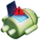

您的浏览器版本过低，为了能看到更多不可描述的内容，建议升级至 Internet Explorer 11 版本或使用其他浏览器（ 如：
Chrome
或
Firefox
）
本站使用的免费服务器，经常抽风，请耐心等待
正在预加载资源...
请自觉抵制 IE 浏览器
FBI WARNING

拒绝访问。您的浏览器版本过低，部分不可描述的内容无法完整显示。强烈建议您升级至 Internet Explorer 11 版本或使用其他浏览器（ 如：Chrome 或 Firefox ）再次访问。
您的浏览器版本过低，为了能看到更多不可描述的内容，建议升级至Internet Explorer 11 版本或使用其他浏览器